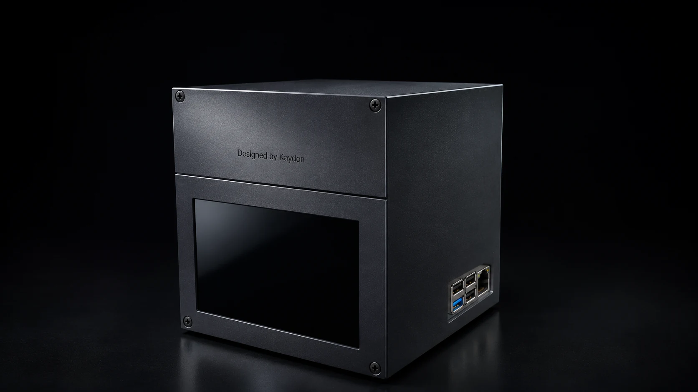
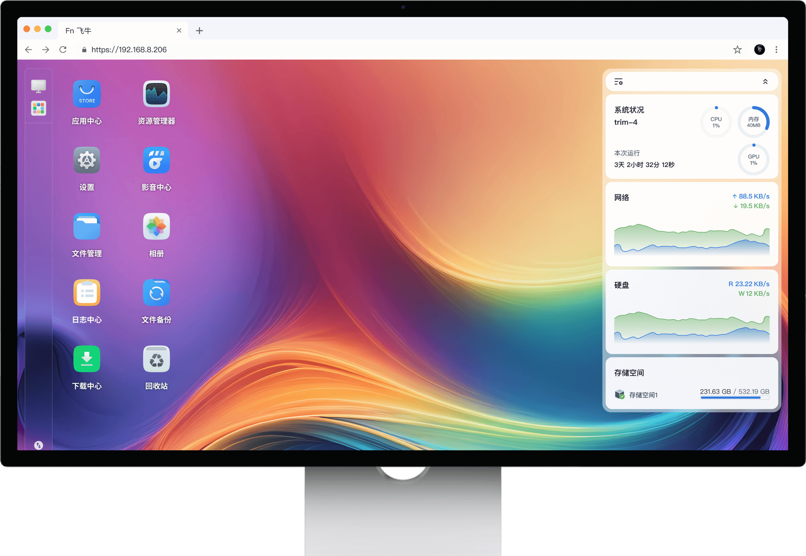
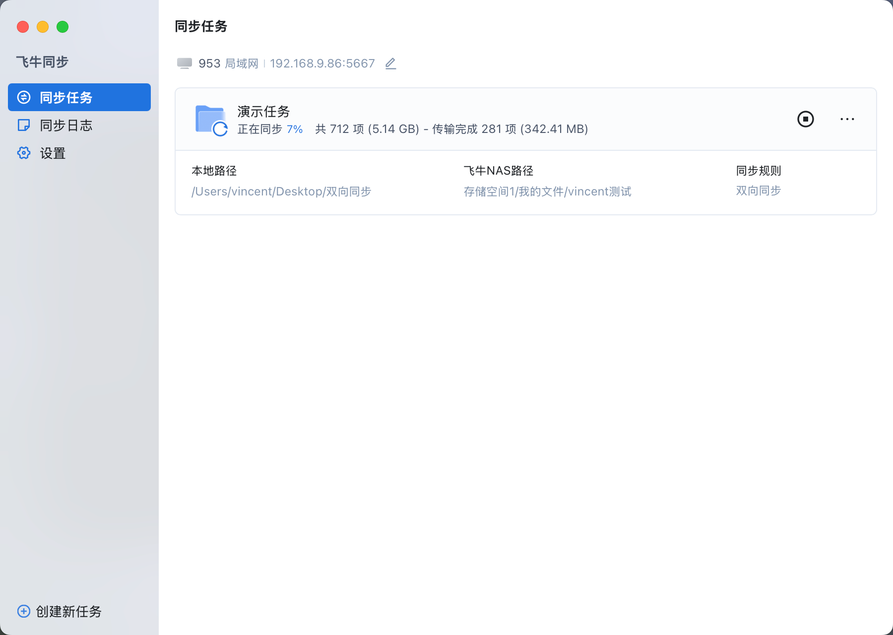
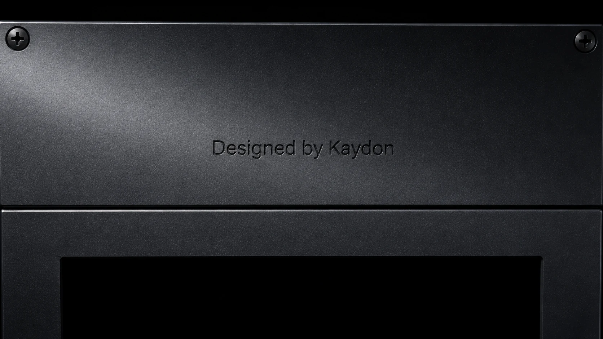
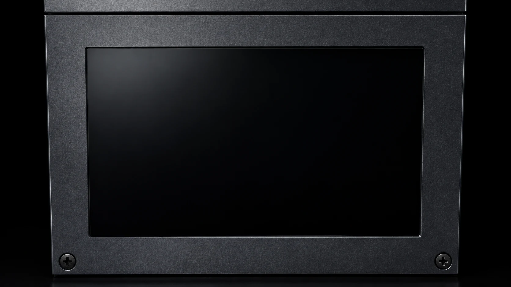
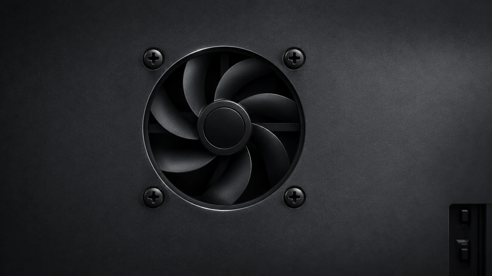
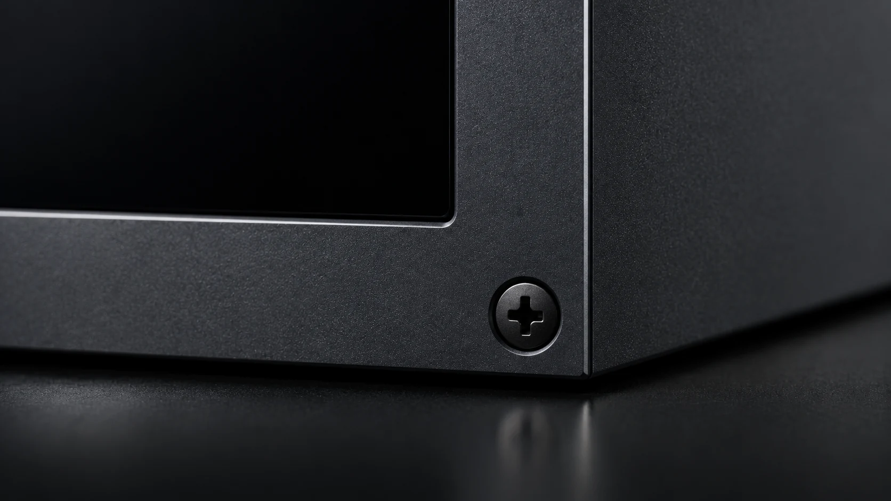
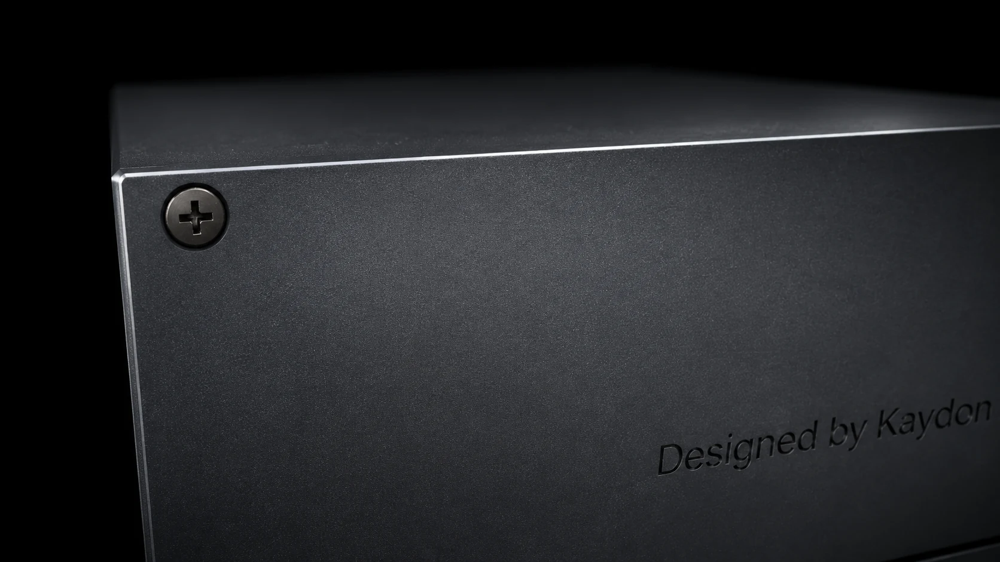

128GB eMMC


DESKTOP PERSONAL CLOUD
便捷高效的全家存储中心
KAYDON 设计
KaydonNAS RockX
外观图与影片为设计可视化，实际材质与工艺以实物为准。


WHY ROCKX


手机/电脑/电视 多端App
打造个人影视库
全家数据，一机守护
亲友/团队，一机多人共享


EXPLODED VIEW

前置面板分体外壳 ROCK Pi X
ROCK Pi X
侧面散热
分体底座
ROCK Pi X V1.3 图片来自 Radxa 官方发布；本机配置以实物为准。
标称容量；系统与格式化会占用部分空间。
来自设计模型，实物尺寸与重量待复核。
当前配置不含额外硬盘，硬盘与硬盘盒另配。
接入电源、路由器或交换机。
在同一局域网中发现设备并完成初始化。
确认可用空间，再建立文件与备份目录。
按需配置电脑同步、照片备份与远程访问。
重装、初始化或格式化会影响现有数据。操作前先保留独立备份。
是板载 eMMC 存储的标称容量；运行内存为 4GB LPDDR3。
这是个人产品项目，目前没有销售、交付或保修安排。
Radxa ROCK Pi X · 飞牛 fnOS · 相册备份 · 电脑同步 · 家庭影音。项目外观图来自作者提供的模型与样机信息；官方素材版权归相应权利人所有，本项目不代表与 Radxa 或飞牛存在联名关系。